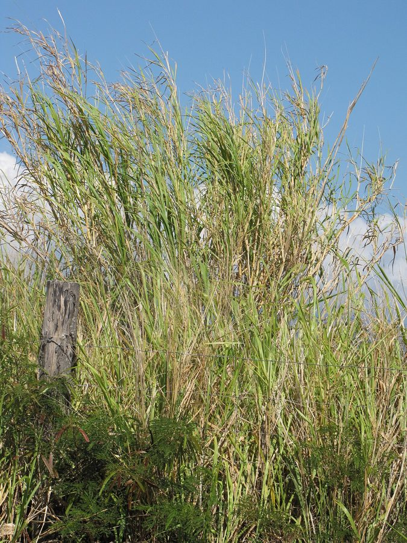

नेपियर घासNapier Grass
Cenchrus purpureus · Poaceae · FLR-0170

- Scientific name
- Cenchrus purpureus (Thunb.) Morrone
- Family
- Poaceae
- Hindi
- नेपियर घास
- Local names
- napier, napier ghas, hathi ghas, elephant grass
- Status here
- cultivated
- IUCN
- not evaluated
- Review
- audited and independently read
When to look कब देखें
Expected mainly in April, May, June, July, August, September, October, November, December.
Uses and possibilities उपयोग और संभावनाएँ
Drawn from the documented uses in the profile below, where each is labelled traditional, current or a research lead. All uses →
नेपियर घास / Napier Grass
Cenchrus purpureus (Thunb.) Morrone — Poaceae
नेपियर घास (हाथी घास, जानवर घास) — एक बहुत मोटी, तेज़ी से बढ़ने वाली घास जो खासकर गाय-भैंसों के लिए चारा है। पौधे 2-3 मीटर तक ऊँचे, तने मोटे, पत्तियाँ लंबी-चौड़ी, गहरी हरी। पशुचारा मात्रा बहुत अधिक। बसंत में बोते हैं, गर्मी-बरसात में अच्छी खूब उगती है। कट-कर फिर से उगने वाली घास, इसलिए पूरी गर्मी में बार-बार काट सकते हैं। खेत की परती ज़मीन पर या घर के किनारे लगाई जाती है। भारत में 1950s में आई, पर अब सभी गाँवों में सामान्य हो गई है।
Quick Identification त्वरित पहचान
| Feature | Description |
|---|---|
| Height | 1.5–3 m tall, robust, tufted clumps |
| Stems | Thick, stout, solid, not hollow, up to 1–1.5 cm diameter, green to reddish |
| Leaves | Long, 0.5–1 m, 1–2 cm wide, linear, with prominent midrib, margins slightly rough |
| Inflorescence | Dense panicle or spike-like panicle, 10–20 cm, initially purple (hence "purpureus"), later tan |
| Roots | Extensive fibrous root system with strong rhizomes; regenerates rapidly after cutting |
Field tip: Look for a tall, thick-stemmed grass growing in large clumps in cultivated fields, homestead margins, or canal banks. The robust stems are solid (not hollow like wheat). The long, broad leaves are drooping. The inflorescence is initially purplish. The plant regrows vigorously after cutting.
Morphology आकारिकी
Biometrics (typical measurements for cultivated napier in northern India):
| Measurement | Range |
|---|---|
| Plant height | 1.5–3 m |
| Stem diameter | 0.8–1.5 cm |
| Leaf length | 50–100 cm |
| Leaf width | 1–2 cm |
| Panicle length | 10–20 cm |
Root system: Extensive fibrous roots with strong, shallow to moderately deep rhizomes. The rhizomes allow the plant to spread laterally and to regenerate after cutting.
Stems (culms): Thick, solid (not hollow), robust, smooth or slightly grooved, green to reddish or purplish. Nodes are prominent and solid.
Leaves: Long and broad relative to most grasses, linear, drooping, with a prominent midrib and fine serrations on the margin. Leaf sheaths clasp the stem; the ligule is hairy.
Inflorescence: A dense, elongate panicle or spike-like panicle, 10–20 cm long. Spikelets are surrounded by bristles (hence the genus name Cenchrus, meaning "spiked millet"). The inflorescence is initially a striking purple or reddish color (the "purpureus" of the scientific name), maturing to tan.
Flower and seed: Wind-pollinated. Spikelets are 5–8 mm long. Seeds are small, enclosed in the bristly involucre.
हिंदी: मोटा, सीधा तना, लंबी पत्तियाँ, बैंगनी फूल। बहुत मजबूत पौधा, बार-बार काटने से फिर बढ़ता है।
Ecological Role पारिस्थितिक भूमिका
A tropical and subtropical perennial grass of African origin, now cultivated globally as a high-biomass forage crop. Cenchrus purpureus (formerly Pennisetum purpureum) was introduced to India in the 1950s by agricultural extension services and has become one of the most important cultivated fodder grasses in livestock farming systems.
The plant produces very high biomass in a single season. In a warm climate with adequate rainfall or irrigation, a single plant can yield 30–50 kg of fresh fodder (or 6–10 kg of dry matter) per year from multiple cuts. The forage is of moderate nutritional quality, with crude protein 10–15% on a dry-matter basis and moderate fiber content. The grass is palatable to cattle, buffalo, sheep, and goats.
The deep rhizomatous root system provides excellent soil stabilization on field margins, canal banks, and eroded areas. The plant is drought-tolerant once established and requires minimal inputs beyond initial establishment and periodic cutting.
हिंदी: बहुत तेज़ी से बढ़ता है। एक साल में 30-50 किलो ताज़ा चारा दे सकता है। गाय-भैंस को बहुत पसंद है। सूखा सहन करता है।
Life Cycle / Phenology जीवन चक्र
Cenchrus purpureus is a perennial grass — once planted, it persists for many years, regenerating after cutting.
| Month | State | हिंदी |
|---|---|---|
| Feb–Apr | Establishment of new plantings; rhizome activation | नई लगाई, विकास |
| May–Jul | Rapid vegetative growth; height increase to 1.5–2 m | तेज़ वृद्धि |
| Jun–Sep | Multiple cutting cycles; each cut followed by regrowth | काटना, फिर से बढ़ना |
| Aug–Oct | Flowering (inflorescence development) | फूल आना |
| Nov–Jan | Slower growth in cool months; maintenance | सर्दियों में कम वृद्धि |
| Jan–Feb | Dormancy or minimal growth in very cold conditions | सर्दी में रुकना |
Cutting schedule: In a productive system, napier grass is cut every 6–8 weeks during the growing season, producing 4–6 cuts per year. Each cut should leave 15–20 cm of stubble to allow rapid regrowth.
From planting to first productive cutting: 3–4 months (90–120 days).
हिंदी: साल भर उगता है। हर 6-8 हफ़्तों में काट सकते हैं। एक साल में 4-6 बार काट सकते हैं।
Associated Species / Interactions संबंधित प्रजातियाँ
- Rotational grazing: Napier is often grown in rotation with Wheat, Paddy, and Maize.
- Field margins: Planted on canal banks and field margins to prevent erosion and provide fodder.
- Fodder bank systems: Cultivated as a dedicated fodder crop, supplementing grazing lands in integrated livestock systems.
Pests and Diseases कीट और रोग
- Shoot fly larvae: Atherigona exigua can damage young shoots, but damage is usually not severe.
- Stalk rot: Fusarium and bacterial stem rot can occur in wet conditions; planting on well-drained soils helps prevent.
- Leaf blotches: Minor fungal spots may appear in humid conditions but rarely cause significant damage.
- Generally hardy: Napier is relatively pest- and disease-resistant, especially compared to maize or sorghum.
Agricultural / Human Relevance कृषि प्रासंगिकता
High-biomass forage crop: Napier grass is cultivated specifically to provide high-quality, high-quantity fodder for livestock. It is the mainstay of dairy production systems in many regions of India, providing year-round green fodder.
Nutritional value: The forage is of moderate nutritional quality for ruminants, with crude protein 10–15% on a dry-matter basis and moderate fiber content. It is most nutritious when harvested at 45–60 days (before flowering). Mature, flowering napier has higher fiber and lower digestibility.
Ease of cultivation: Napier requires minimal inputs beyond land, water, and labor. Once established from rhizome cuttings or seedlings, the crop is low-maintenance. It requires no purchased seed; farmers save rhizomes for propagation.
Improved varieties: The Improved Napier (Cenchrus purpureus hybrids) developed by agricultural research institutions produce even higher biomass and are more digestible than landrace napier. Common varieties include Pusa Napier 1, Hybrid Napier No. 1, and others.
Cultivation:
- Planting: Rhizome pieces (10–15 cm with 2–3 nodes) are planted at 50 cm × 50 cm spacing in April–May.
- Irrigation: Napier is grown under rainfed conditions in monsoon regions but benefits from supplemental irrigation during summer or drought.
- Fertilization: Napier is a heavy feeder and responds well to nitrogen (N) application, 100–150 kg/ha annually.
- Cutting: Harvesting begins at 75–90 days after planting; thereafter, harvests every 45–60 days.
Fodder bank concept: In smallholder livestock systems, napier is planted on 0.2–0.5 ha of dedicated "fodder bank" land, supplementing grazing and providing dry-season forage security.
हिंदी: दूध देने वाले जानवरों के लिए सबसे अच्छा चारा। गाय-भैंसों को बहुत पोषक है। कम देखभाल में ज़्यादा चारा मिलता है।
Expected Locally स्थानीय रूप से अपेक्षित
Not a field record. Written from published accounts for eastern Uttar Pradesh. No confirmed local sighting yet — if you have seen it, that is what the atlas needs.
अभी तक स्थानीय पुष्टि नहीं। यह विवरण प्रकाशित स्रोतों से है, किसी अवलोकन से नहीं।
Expected as a cultivated fodder grass on field margins, canal banks, and dedicated fodder plots throughout Basti district. The thick, tall stems and broad leaves are easily visible. The plant is widely recognized by farmers as a standard livestock feed.
Distribution वितरण
Global range: Native to Africa (Ethiopia); introduced and widely cultivated throughout tropical and subtropical Asia, the Americas, and Australia.
In India: Cultivated throughout the Indo-Gangetic plain and in southern states; now one of the most common fodder grasses.
In Uttar Pradesh: Widely cultivated in all livestock-producing regions.
In Basti district / eastern UP: Expected as a cultivated fodder crop on field margins and homestead plots.
Research Questions शोध प्रश्न
Anyone can investigate these | कोई भी इन प्रश्नों की जाँच कर सकता है
- How much fresh and dry-matter fodder can be harvested from one square meter of napier grass at 45, 60, and 90 days after cutting? — Measure cutting yields at each interval; weigh fresh and dried material.
- Do cattle prefer napier grass cut at 45, 60, or 90 days? — Offer all three ages to livestock; observe intake and preference.
- How many tillers (new shoots) emerge after cutting, and how long until each cutting cycle is complete? — Track regrowth after cutting; count tillers; measure time to next harvest.
- What is the minimum and maximum spacing for napier planting, and how does it affect yield? — Plant at different spacings; compare total biomass at harvest.
- Can napier grass be grown from seed as well as from rhizome cuttings, and are seedling yields comparable to rhizome propagation? / क्या नेपियर घास बीज से भी उग सकती है और क्या बीज से निकली फसल दर्जे के बराबर है? — Compare seed-based and rhizome-based establishment.
Similar Species मिलती-जुलती प्रजातियाँ
| Species | How to tell apart | हिंदी |
|---|---|---|
| Maize (Zea mays) | Solid stem but produces only one ear; shorter; tassels with pollen; annual | मक्का — एक बाली, कम ऊँचा, सालाना |
| Sorghum (Sorghum bicolor) — forage varieties | Stem more slender; leaves narrower; inflorescence is a panicle of spikelets, not bristles | ज्वार — पतला तना, संकरी पत्ती |
| Bajra (Cenchrus glaucus) — Pearl Millet | Much shorter (0.5–1.5 m); thinner stems; similar bristly inflorescence but smaller overall | बाजरा — बहुत छोटा |
Field rule: A tall (1.5–3 m), thick-stemmed, tufted perennial grass with broad, long leaves and a purplish, bristly, spike-like inflorescence; regrows rapidly after cutting and is cultivated specifically for high-biomass forage is napier grass.
Taxonomy & Classification वर्गीकरण
Original description. Originally described as Pennisetum purpureum Schumacher (1827). Reclassified as Cenchrus purpureus by Morrone in 2010 based on molecular phylogenetic studies. The genus name Cenchrus is from the Greek kenchros, meaning "millet." The specific name purpureus refers to the purple color of the inflorescence.
Subspecies. Monotypic — no subspecies are currently recognised.
Family and order placement. Poaceae, subfamily Panicoideae, tribe Cenchreae. The genus Cenchrus includes about 25 species, many of which are cultivated for forage.
Phylogenetic notes. Cenchrus purpureus is closely related to other Cenchrus species and shares the bristly inflorescence with pearl millet (Cenchrus glaucus).
IUCN status rationale. Not evaluated. Widely cultivated; not assessed for conservation status.
Photo Gallery फोटो गैलरी
Photos needed आवश्यक फोटो
- [ ] Tall clump of napier grass showing overall plant structure
- [ ] Close-up of the purple inflorescence
- [ ] Freshly cut napier being fed to livestock
- [ ] Regrowth after cutting
No photos yet — add field photos to media/species/napier_grass/ and run node scripts/sync_photos.js.
References संदर्भ
- Schumacher, C.F. (1827). Beskrivelse af Guineiske Planter. Copenhagen.
- Morrone, O., Agrawal, S., Aliscioni, S., Giussani, L.M., Zuloaga, F.O. & Kellogg, E.A. (2012). Phylogeny, biogeography and character evolution in the genus Cenchrus (Poaceae). Annals of Botany 111(1): 279–292.
- Indian Council of Agricultural Research (2021). Handbook of Agriculture. ICAR, New Delhi.
- Sharma, N.C. & Negi, V. (2014). Productivity and nutrient uptake of napier-hybrid fodder maize intercropping system. Indian Journal of Dairy Science 67(5): 391–398.
- Botanical Survey of India. State Flora Series: Flora of Uttar Pradesh. BSI, Kolkata.
- GBIF Occurrence Data — Cenchrus purpureus, India (2015–2026).
Source file: species/flora/grasses/napier_grass.md